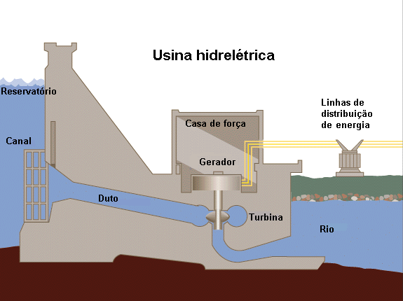

A energia hidráulica é feita através das quedas de água, que quando usadas para gerar eletricidade chamamos de energia hidrelétrica. Devido ao seu enorme potencial hídrico, países como Brasil, Estados Unidos e o Canadá vêm investindo e focando a maioria de seus investimentos em usinas hidrelétricas.
 A energia hidráulica é feita por vários processos naturais como evaporação, condensação e a precipitação de águas. Todos esses eventos ocorrem através da irradiação solar e da energia gravitacional. Mas para ser transformada em energia elétrica, a energia hidráulica precisa ser transformada em energia cinética através de pás, localizadas no duto, que quando movimentadas, acionam o gerador onde transformam a energia cinética em elétrica.
Se você quiser saber mais sobre este tipo de energia ou quer ir mais a fundo sobre este assunto, confira este vídeo que deixamos disponibilizados para você: